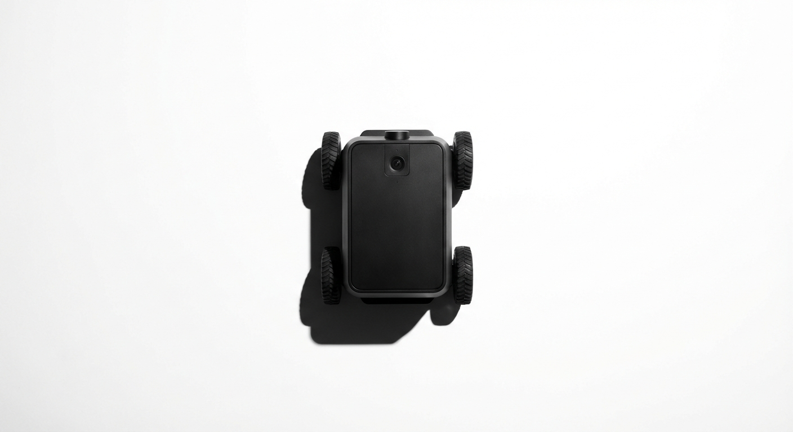
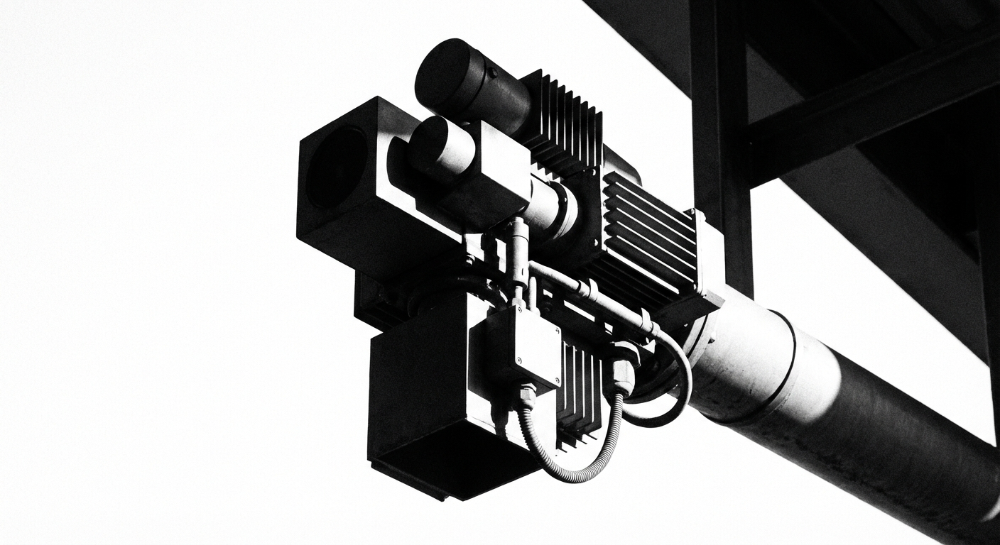

04 — Photography
Object on white · Architectural · Documentary

Overhead · Robot chassis · Object on white

Upshot · Sensor array · Architectural

Structure · Geometric · Hard contrast
Formant monitors physical operations at frequencies no human operator can sustain. The anomaly was always there — we were the only ones listening.
V7 is a clean departure. White-dominant, Swiss-precise, with a single non-obvious accent: phosphor green — the color of oscilloscope traces, the original medium for visualizing electronic signals. It has 60 years of technological heritage and remains completely unoccupied in the robotics and AI space. Not lime, not neon. Precise. The color of a system that is running, watching, and alive. On dark backgrounds it reads as an active monitoring state. On white it reads as the one thing that matters. The brand idea made literal: the signal, visible.


White foundation. Near-absolute black. One accent: phosphor green. The monochrome system is the brand — the green appears only where the data is meaningful. One value, one indicator, one word. It earns its place every time.
Light weight as default — 300 for body, 300 for display with selective 600 for emphasis. The contrast between light and semibold creates hierarchy without changing size. Mono for all data, labels, and system text.
Light weight wordmark — the weight contrast between the phosphor F and the light remainder creates the hierarchy. Clean, modern, scales to 16px. The F-waveform direction remains the structural next step.